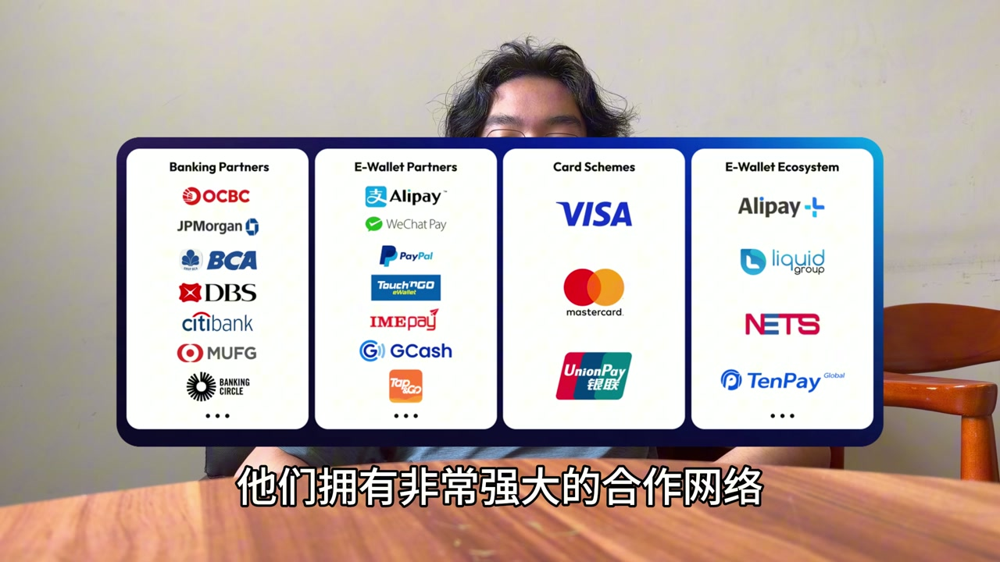
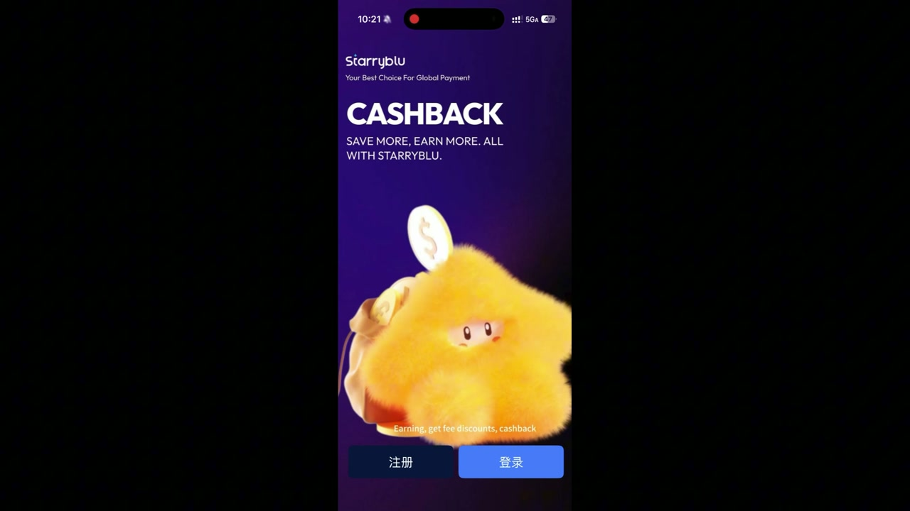
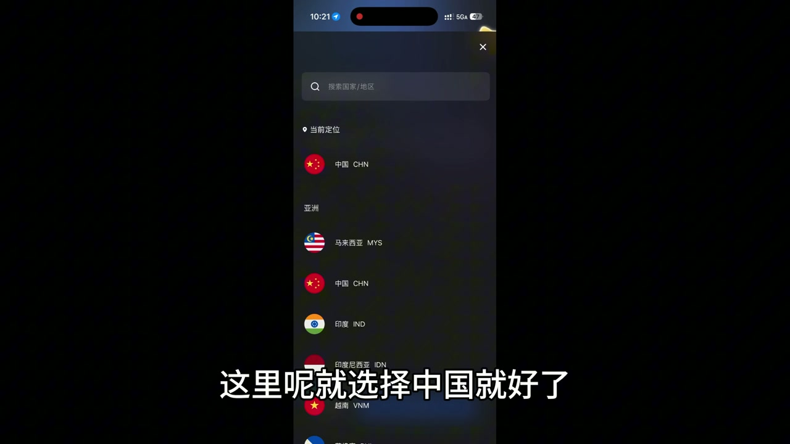
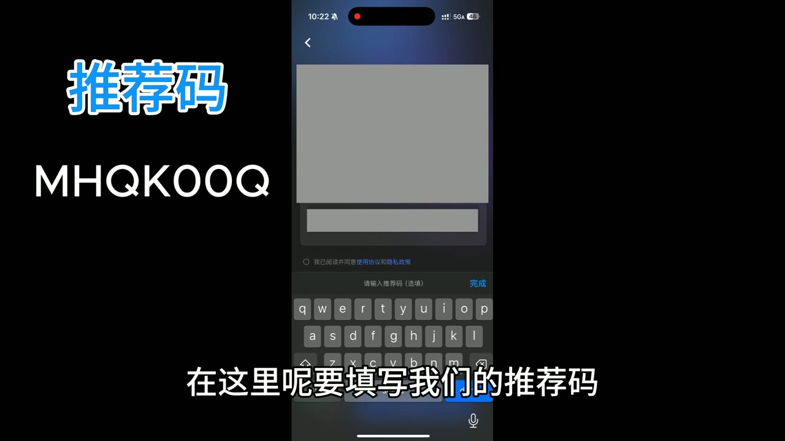
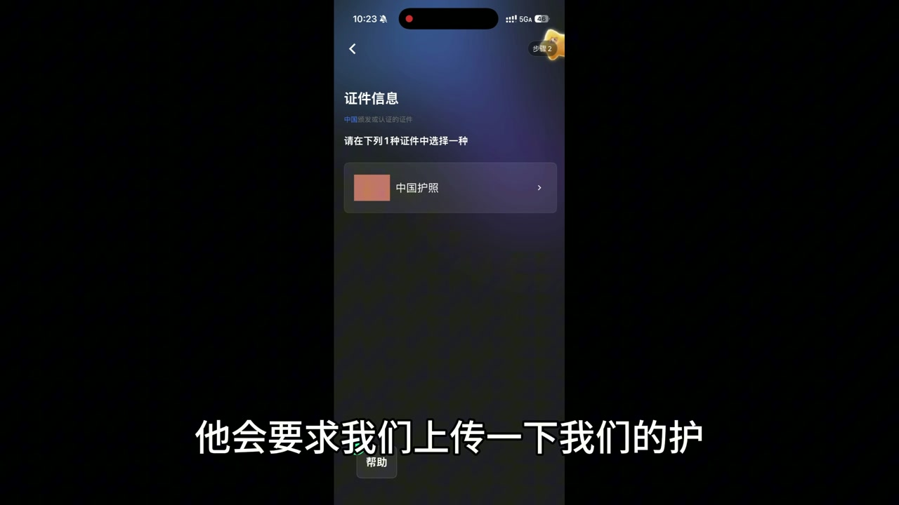
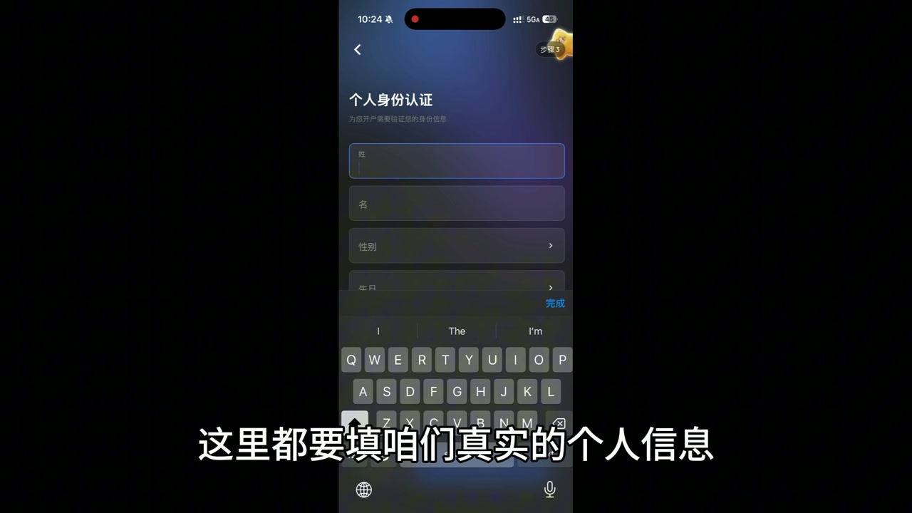
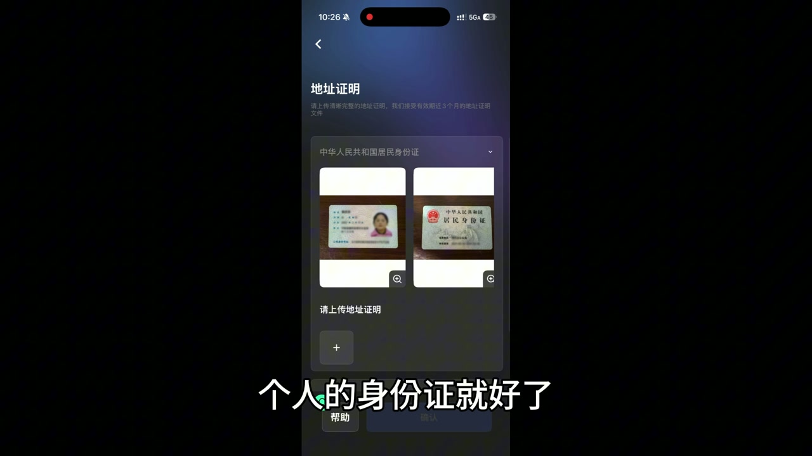

Starryblu · 全球支付 · 多币种账户 · 跨境消费
全程免费 Starryblu 最新注册教程：海外订阅、AI换汇、全球取现一张卡搞定？
这期视频梳理了 Starryblu 的定位：它是一款面向全球支付和跨境生活的 App。 文章按视频顺序整理，从产品能做什么、如何注册开户、在哪里填写邀请码， 到海外服务订阅、AI 智能换汇、全球取现/实体卡和优惠活动，方便你按步骤查看。
在 YouTube 观看本期视频开始前先准备什么
- 一台可以安装 Starryblu App 的手机，iOS 或 Android 均可。
- 可接收验证码的手机号，以及稳定的网络环境。
- 真实个人身份信息。视频里展示了填写个人资料、上传护照或证件的流程。
- 如果你要使用本视频邀请码，建议在注册流程出现邀请码入口时填写。
- 如果你所在地区暂不支持注册、开户、卡片或某些支付功能，请以 App 内提示为准，不要绕过官方要求。
这期视频解决什么问题
新版开头的重点是：如果你有跨境支付需求，比如海外订阅、出国消费、留学、自由职业收支、 旅行取现或多币种资金管理，可以了解一下 Starryblu。 视频把它描述成一个全球支付产品，核心不是单一钱包，而是围绕“跨境生活怎么付钱、怎么换汇、怎么管理多币种”展开。
这篇文章会按视频中的操作顺序整理，同时补充 Starryblu 的基础产品信息。 你不需要记住视频里的每一句话，只要回到文章按步骤查即可。
Starryblu 的定位：类似 Wise / Revolut 的跨境支付场景
视频里用 Wise、Revolut 做类比，是为了让你快速理解产品类型： 这类 App 通常围绕多币种账户、境外消费、跨境转账、汇款、卡片和换汇展开。 如果你已经熟悉 Wise 或 Revolut，Starryblu 可以被理解成另一个全球支付账户选择。
但类比不等于功能完全一致。Starryblu 能否在你所在地区开户、支持哪些币种、卡片是否可用、 支付网络是否覆盖你要用的商户，都需要以官方 App 内实际显示为准。
支付网络与安全性
视频展示了 Starryblu 的支付网络示意图。画面里包括银行网络、电子钱包网络、卡组织和本地电子钱包生态， 例如 Alipay、WeChat Pay、PayPal、Visa、Mastercard、银联等标识。 视频中也提到，用户可以借助这些网络进行跨境支付、线上线下消费、银行卡/银联相关场景的支付。

打开 Starryblu App，选择国家或地区
-
下载并打开 Starryblu App
通过 Starryblu 官网、App Store 或 Google Play 下载官方 App。 打开后，视频画面中先进入一个带有 CASHBACK 的启动/活动页， 点击继续后进入注册流程。

活动页面可能会随版本和地区变化，不必和视频画面完全一致。 -
选择居住国家或地区
视频中演示选择 中国。读者应选择自己的真实居住国家或地区， 不要为了通过注册随意选择。这个信息可能影响身份认证、开户资格、可用服务和后续合规要求。

按真实情况选择居住国家或地区。
填写邀请码：MHQK00Q
视频明确展示了邀请码入口。邀请码如下，复制时注意中间是两个数字 0，不要看成字母 O。
MHQK00Q邀请码只应填在 App 的邀请码字段中。不要把它写到姓名、地址、证件号或其他无关字段。 如果你已经跳过邀请码页面，是否还能补填要以 App 当前规则为准。

上传护照或身份证件，填写真实个人信息
账号注册后，Starryblu 会继续要求进行身份认证。视频里出现了上传护照/身份证件的页面， 也展示了需要填写个人信息的步骤。金融类产品通常需要 KYC 认证，这一步不要使用虚假信息。
-
按页面提示上传证件
视频画面中提示上传护照。实际可上传的证件类型可能因你选择的国家或地区不同而变化。 如果页面要求正反面、自拍、人脸识别或补充材料，按 App 内提示完成。

证件材料只应上传到官方 App 内的认证页面。 -
填写真实个人信息
继续填写姓名、生日、地址等个人信息。不要照抄视频画面中的示例，也不要使用和证件不一致的信息。 如果信息不一致，可能导致认证失败或后续账户功能受限。

所有个人信息都应按自己的真实资料填写。 -
提交身份认证
按页面提示完成证件上传后提交审核。审核时间和结果由 Starryblu 决定， 具体以 App 内状态、短信或邮件通知为准。

如果审核失败，先看官方提示缺少什么材料，不要重复乱传。
Starryblu 能做什么
视频后半段用一页功能总览把 Starryblu 的用途拆开：海外服务订阅、AI 智能换汇、 全球取现/实体卡，以及优惠补贴。下面按视频中的三个典型场景展开。
场景一：海外服务订阅
视频里第一个场景是海外服务订阅，例如 ChatGPT 会员或其他需要海外支付方式的订阅服务。 思路是使用 Starryblu 的海外支付能力，在支持的情况下完成订阅付款。
这里不能保证每个服务、每个地区、每张卡或每个账户都能成功支付。 如果订阅失败，常见原因包括：服务商不接受该地区账户、卡片尚未开通、余额不足、风控拦截、 账单地址不匹配或服务商政策变化。
场景二：AI 智能换汇
第二个场景是 AI 智能换汇。视频中提到，Starryblu 带有 AI Agent 智能换汇功能， 用来辅助用户关注汇率变化，并在需要时进行换汇操作。
换汇仍然有市场波动风险。AI 提醒或自动执行不代表一定能换到最低价，也不等于投资建议。 如果金额较大，建议先了解汇率、手续费、限额和到账规则，再决定是否操作。
场景三：全球取现与实体卡
第三个场景是实体卡和全球取现。视频中提到，Starryblu 支持全球取现和实体卡， 办卡后可以在覆盖地区的 ATM 网络中取现，也可以在线下购物、交通、小额消费等场景使用。
这类功能尤其要看地区和费用：ATM 取现可能涉及 Starryblu 费用、ATM 运营方费用、 汇率差、单笔/每日限额和卡片状态限制。出行前最好先在 App 内确认卡片是否激活、余额是否足够、 目的地是否支持。
优惠补贴和使用提醒
视频最后提到，Starryblu 支付记录里可能能看到优惠、消费红包或相关减免。 这类活动适合在付款前顺手查看，但不要把它理解成每一笔交易都有固定优惠。
这些优惠通常会有活动期、地区、商户、币种、金额、账户状态等限制。 所以不要只因为视频里展示优惠就默认自己一定能拿到同样权益。 真正付款前，先看 App 的结算页、活动规则和扣款金额。
Starryblu 简洁介绍
Starryblu 总部位于新加坡，是一款面向跨境生活的全球支付产品。 它把全球账户、多币种管理、跨境汇款、消费支付、余额收益和 AI 智能换汇放在同一个 App 中， 更适合经常旅行、留学、海外工作、自由职业或需要处理多币种资金的人。
Starryblu 与 Panda Remit（熊猫速汇）同属 WoTransfer Pte Ltd 旗下。 Panda Remit 更聚焦跨境汇款，Starryblu 则更偏向全球账户、多币种支付和跨境生活场景。 简单理解，Starryblu 可以看作“跨境汇款 + 多币种账户 + 支付功能”的一站式电子钱包。
你可以重点了解这些功能
- 全球账户与多币种管理：支持多种主流货币的持有与管理，适合留学、旅行、工作和跨境消费。
- 跨境汇款：可用于全球汇款场景，具体支持地区、手续费和到账时间以 App 内显示为准。
- AI 智能换汇：辅助关注汇率变化，帮助用户在需要时完成换汇操作。
- 实体卡与虚拟卡：可用于线上订阅、线下消费、旅行支付和 ATM 取现等场景。
- ID Transfer 转账：可通过 Starryblu ID 等方式完成转账，减少传统银行账户信息输入。
- 余额收益：账户余额可按官方规则享受收益，具体规则以 App 内说明为准。
- 安全与监管：Starryblu 持有新加坡金融管理局（MAS）大型支付机构牌照，资金安全和账户认证以官方说明为准。
- 客服支持：提供多语言客服入口，遇到认证、支付、卡片或账户问题时应优先联系官方客服。
常见问题和注意事项
Starryblu 适合谁？
更适合国际旅行、海外工作、留学、数字游民、自由职业者、跨境消费用户， 或者经常需要管理不同币种、订阅海外服务、进行境外支付的人。
注册一定能通过吗？
不一定。开户通常会受居住地、证件类型、合规政策、风险审核和 Starryblu 当前支持范围影响。 如果 App 显示不支持或审核失败，应以官方说明为准。
邀请码一定有奖励吗？
不一定。推荐奖励通常取决于活动规则、注册时间、开户完成情况、交易条件和地区限制。 使用前请查看 App 内推荐活动说明。
怎么避免下载到假 App？
优先从 Starryblu 官网、App Store 或 Google Play 下载。 不要安装陌生人通过聊天软件发来的 APK，也不要在非官方网页填写手机号、验证码、密码和证件信息。
官方资料与相关链接
- Starryblu 官网
- Starryblu Company 页面
- Starryblu Security 页面
- Starryblu Contact 页面
- Starryblu App Store
- Starryblu Google Play
- Monetary Authority of Singapore：WOTRANSFER PTE. LTD.
金融产品涉及身份认证、资金安全和合规要求。使用跨境支付、换汇、银行卡或取现服务前， 请根据你所在地区的法律法规、平台条款和官方页面自行判断。